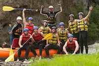

.
Founded in 2005, Wild Rapids Adventures began as a small, passionate team of outdoor enthusiasts who shared a common dream: to introduce people to the exhilarating world of whitewater rafting. What started as a humble operation with just a handful of rafts and a commitment to safety and fun has since evolved into a leading adventure company known for its exceptional experiences and dedication to environmental stewardship.